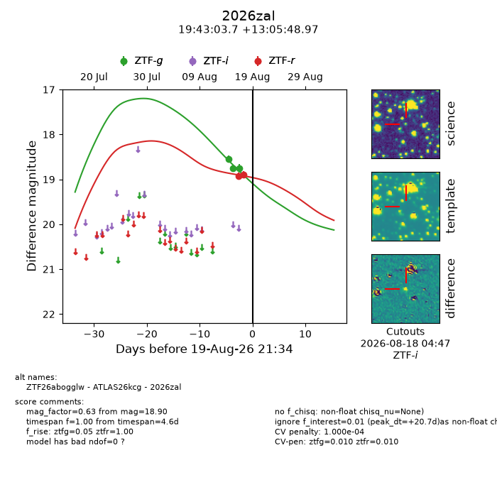
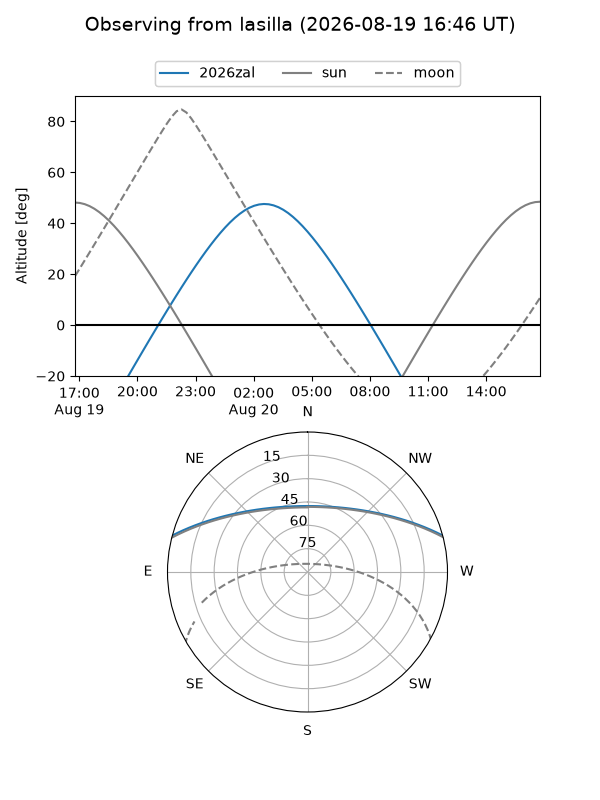
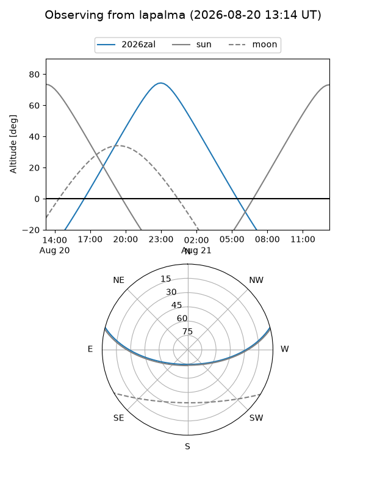
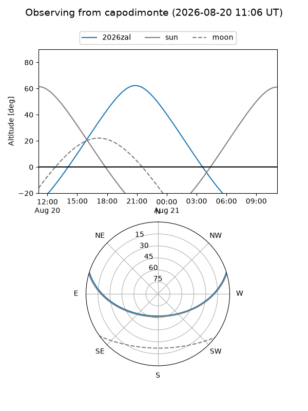
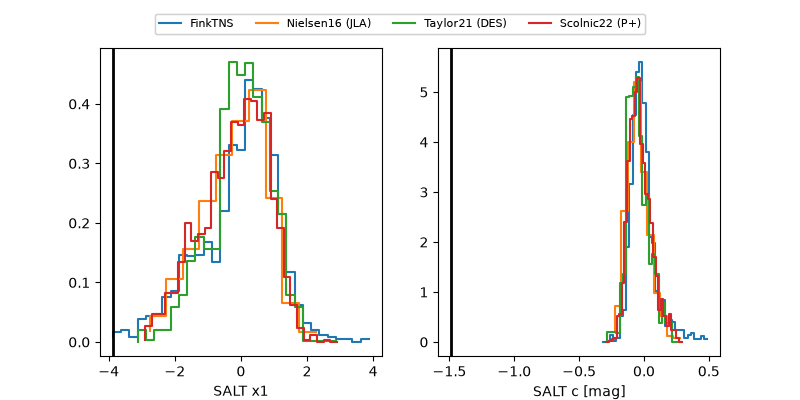

2026zal
Target 2026zal at 2026-08-20 09:34
Aliases and brokers:
FINK-ZTF: ztf.fink-portal.org/ZTF26abogglw
Lasair-ZTF: lasair-ztf.lsst.ac.uk/objects/ZTF26abogglw
ALeRCE-ZTF: alerce.online/object/ZTF26abogglw
YSE-PZ: ziggy.ucolick.org/yse/transient_detail/2026zal
TNS name: wis-tns.org/object/2026zal
Direct TNS query: direct search
alt names
ZTF26abogglw (ztf,fink_ztf)
2026zal (tns,yse)
ATLAS26kcg (atlas)
Coordinates:
equatorial (ra, dec) = 295.7655,+13.09694
equatorial (HMS+DMS) = 19:43:03.73,+13:05:48.97
galactic (l, b) = (50.5157,-5.18003)
Flags:
TNS type: nan
peak dt: +21.2
likely cv: !!
Photometry:
last ztfg=18.76, ztfr=18.90
3 ztfg, 2 ztfr detections
Lightcurve

Visibility



Additional plots
